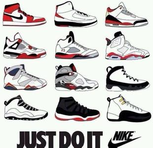
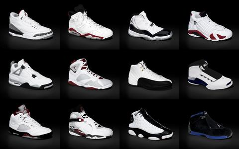
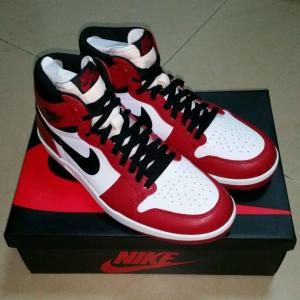

Air jordan
nike旗下的高端品牌。专门为乔丹所创立的品牌。“Air Jordan”，这是nike为乔丹推出的名字。不仅体现出鞋子的科技工艺，也可以反映出乔丹打球的风格
在这个年代我们可以见证很多奇迹的发生，也可以看见很多品牌从衰到盛的过程！至今大家都在想到底谁成就了谁，这是很矛盾的话题，所以我们也不去谈论了！我们欣赏到了乔丹鞋文化历经了将近30年的一个过程！这对于我们而言就是幸福的
1984年感恩节期间推出的那则广告，则给很多人留下了深刻的印象。镜头首先从空中俯看芝加哥概貌，随之传来引擎的呼啸声，乔丹以慢动作跑进镜头，手中接住一个篮球，运球至篮筐下，双腿展开，一手高举篮球，一手直伸向下前方，将球扣进。此时画外音响起：谁说他不是在飞!
